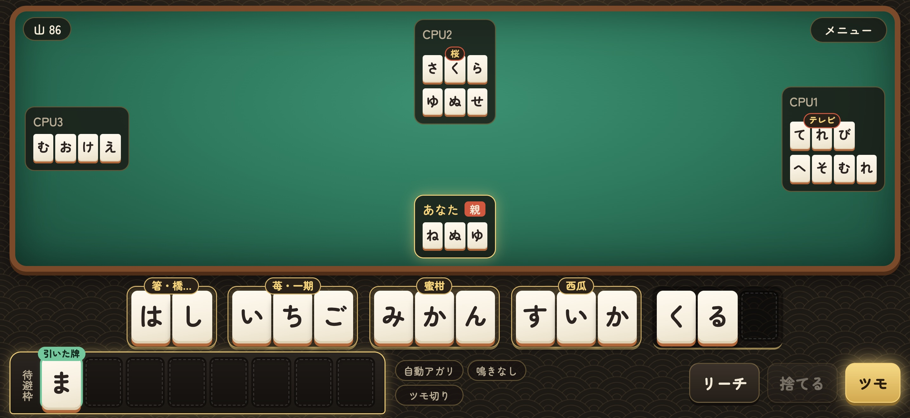
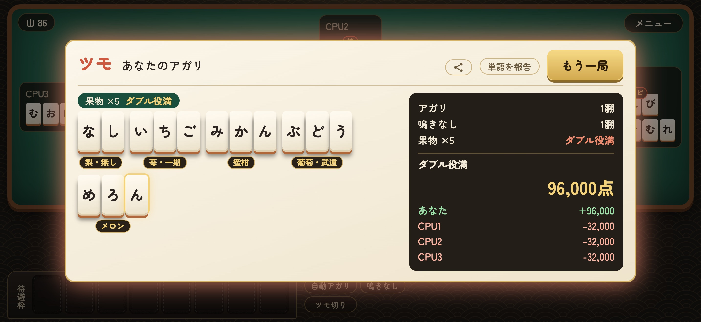
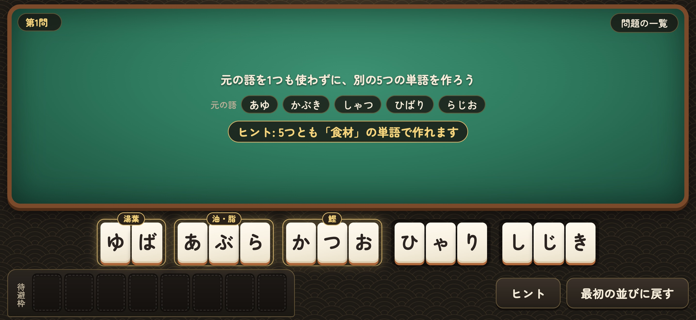

ひらがなの牌で単語を作る麻雀ゲーム「ことば雀」
iPhone・iPad で配信開始
手牌を並べ替えて、単語を5つ作ればアガリ。ひらがなを覚えたての子どもから、麻雀を知らない大人まで
個人でアプリを開発している sukima apps（Ryohei Sakai）は、ひらがなを牌にした言葉遊びの麻雀ゲーム「ことば雀（ことばじゃん）- ひらがな麻雀」を、2026年10月27日に App Store で配信開始しました。iPhone・iPad で遊べます。基本無料で、買い切り（500円）にするとすべての遊びが無制限になります。広告はありません。配信開始後もアップデートを重ね、並べ替えパズル100問や、日替わりの「今日の二十手」「早並べ」とランキングを加えています。

「ことば雀」とは
麻雀の牌が、すべてひらがなになったゲームです。14枚の手牌を、3文字の単語4つと2文字の単語1つに並べ替えればアガリ。牌を引いて、捨てて、単語を組み替えながらアガリを目指します。相手の捨てた牌で単語を完成させる「ロン」や「チー」、「リーチ」もあります。CPU 3人と対戦する4人打ちです。
牌を並べるたびに単語になったかがすぐ分かり、できた単語には漢字の表記が付きます（はし → 箸・橋・端）。麻雀を知らない人も、ことば遊びとして楽しめます。
主な特徴
1. 役は「同じ分類」の単語
果物・野菜・鳥・虫・天気・乗り物・楽器など、38の分類があります。同じ分類の単語を揃えるほど点数が上がり、5つ揃えば役満です。どの単語をどの分類に数えるかは、いちばん高くなるようにアプリが選びます。

2. 収録はおよそ5,300語
無料で公開されている辞書 JMdict をもとに、ふだん使う名詞を選んで収録しました。地名・人名などの固有名詞は使えません。遊んだ人から届いた単語の報告を取り込んで、語を増やし続けています。
3. 並べ替えパズル 100問
アガリの形に並んだ5つの単語を崩して、元の単語を1つも使わずに、別の5つの単語を作るパズルです。時間の制限はありません。どの問題にも、5つとも同じ分類で揃う答えがあり、行き詰まったらヒントで分類と答えの単語を見られます。

4. 毎日の遊び「今日の二十手」「早並べ」
「今日の二十手」は、その日は誰が遊んでも同じになる配牌を、20手で解いて、消した牌の数を競います。「早並べ」は、30秒の間に3枚の牌を並べ替えて、単語を次々と作ります。どちらも全プレイヤーのランキングがあります。
5. 集める楽しみ
作った単語が集まる単語図鑑、80を超える実績、実績や図鑑で手に入る卓と牌の着せ替え（桜・畳・漆の卓、桜貝・檜・黄金の牌など16種類）があります。
6. 日本語と英語の画面
画面は日本語と英語で遊べます（牌と単語はひらがなのまま）。ひらがなを学んでいる人が、単語に親しむのにも使えます。
遊べる範囲
- 無料: 1局の対局を1日2回、早並べを1日3回、今日の二十手をその日1回。並べ替えパズルは最初の2問と、次の日から1日1問ずつ。ヒントは無料
- 買い切り（500円）: 1局・東風戦・早並べ・今日の二十手の遊び直しが何回でも。並べ替えパズルは全100問
- 広告はありません
開発者のコメント
「ひらがなを覚えたての子どもと、麻雀のルールを知らない大人が、一緒に遊べるゲームがあったらいいなと思って作りました。知っている言葉を並べるだけで遊べるので、日本語を勉強中の海外の方にも遊んでもらえたら嬉しいです。」（sukima apps Ryohei Sakai）
今後の予定
Android 版を準備しています。Google Play での公開に向けて、試していただけるテスターを紹介ページで募集しています。
アプリ概要
| 名称 | ことば雀 - ひらがな麻雀（ことばじゃん） |
|---|---|
| 英語名 | Kotobajan: Hiragana Mahjong |
| ジャンル | 言葉遊びの麻雀ゲーム |
| 対応端末 | iPhone・iPad（iOS 15.0 以降） |
| 価格 | 基本無料（買い切り 500円） |
| 言語 | 日本語・英語 |
| 配信開始日 | 2026年10月27日 |
| App Store | https://apps.apple.com/jp/app/id6826314811 |
| 紹介ページ | https://sakairuh.github.io/kotobajan/ |
| プレスキット | https://sakairuh.github.io/kotobajan/press/（画像素材） |
| 開発 | sukima apps（Ryohei Sakai、個人開発） |
| 辞書データ | JMdict（Electronic Dictionary Research and Development Group、CC BY-SA 4.0）をもとに作成 |
本件に関するお問い合わせ
sukima apps Ryohei Sakai
メール: ryohei.dev.support@gmail.com